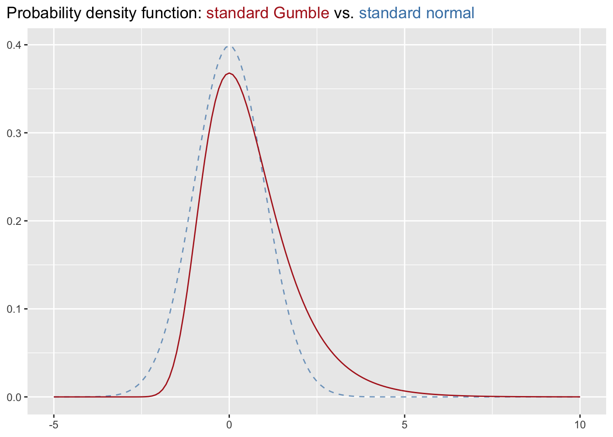
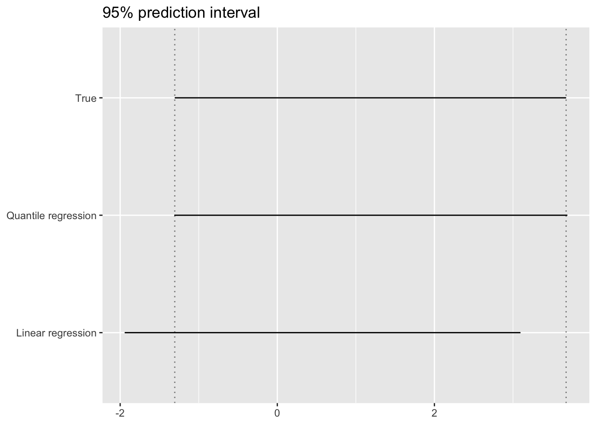

반응변수 \(y\)가 아래와 같은 Gumbel distribution을 따른다고 할 때,
\[ F(y) = \exp \left( -\exp \left( - \frac{y - \mu}{\sigma} \right) \right) \]
\(\mu = 0\), \(\sigma = 1\) 에서의 분포는 아래 그래프와 같다.

위 standard Gumbel 분포에서 100,000개의 샘플을 추출한 뒤, 일반적인 최소자승 회귀분석과 quantile regression을 각각 적용하여 95% 예측구간(i.e. [2.5%, 97.5%])을 추정해보자. 이 예에서 예측변수는 존재하지 않으므로, 회귀모형은 y-절편값만을 구한다. 또한, \(y\)값의 실제 분포를 알고 있으므로, 실제 분포에서의 95% 구간을 구해보자.
df_gumbel_random <- tibble(
y = rgumbel(1e5)
)
true_interval <- qgumbel(c(0.025, 0.975)) %>%
set_names(c("lwr", "upr"))
lm_interval <- lm(y ~ 1, df_gumbel_random) %>%
predict(newdata = tibble(.rows = 1), interval = "prediction", level = 0.95) %>%
drop() %>%
`[`(c("lwr", "upr"))
rq_interval <- rq(y ~ 1, df_gumbel_random, tau = c(0.025, 0.975)) %>%
predict(newdata = tibble(.rows = 1)) %>%
drop() %>%
set_names(c("lwr", "upr"))## Warning in rq.fit.br(x, y, tau = tau, ...): Solution may be nonunique
## Warning in rq.fit.br(x, y, tau = tau, ...): Solution may be nonuniquedf_prediction_interval <- t(cbind(true_interval, lm_interval, rq_interval)) %>%
as_tibble(rownames = "method")
df_prediction_interval## # A tibble: 3 x 3
## method lwr upr
## <chr> <dbl> <dbl>
## 1 true_interval -1.31 3.68
## 2 lm_interval -1.94 3.10
## 3 rq_interval -1.31 3.69아래 그래프에서, quantile regression을 사용하였을 때 실제 범위와 가깝게 추정되며, 일반 최소자승 회귀분석을 이용하였을 때에는 추정범위가 실제 범위로부터 멀어짐을 확인할 수 있다.
